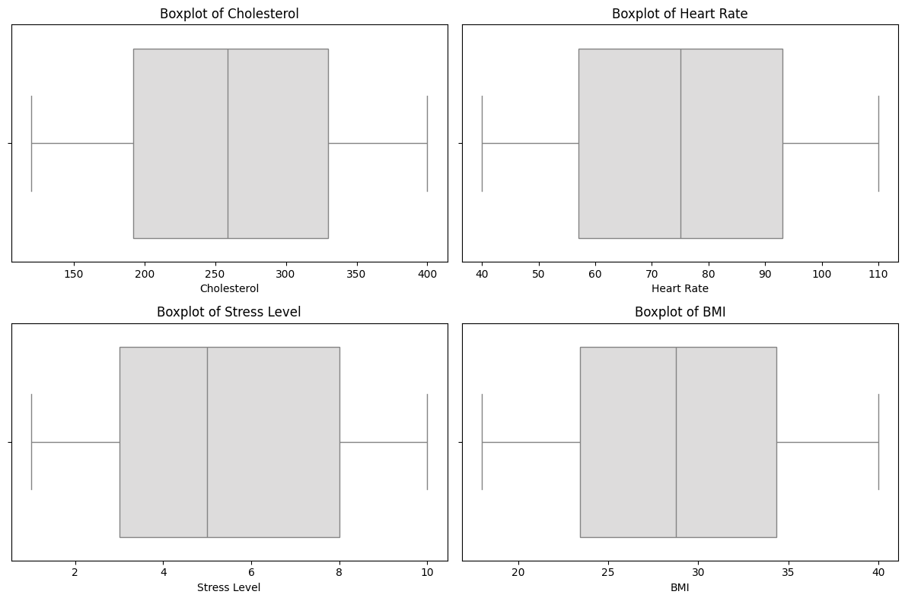
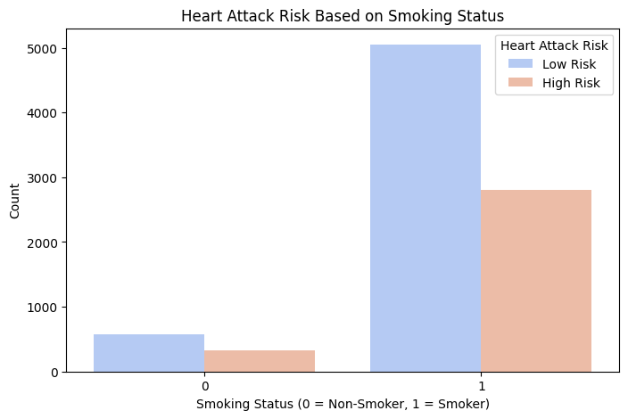
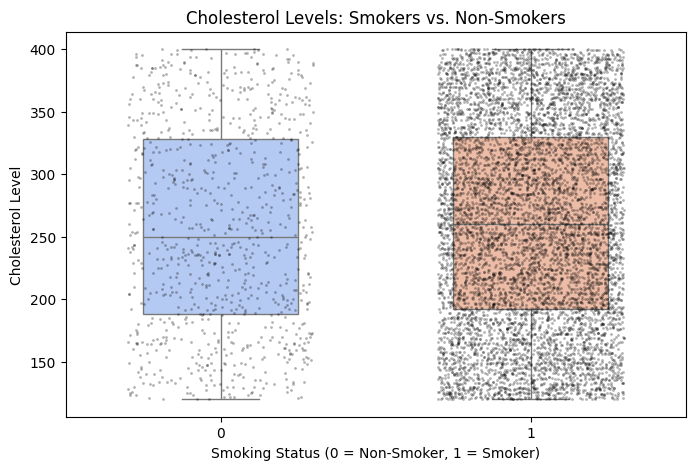
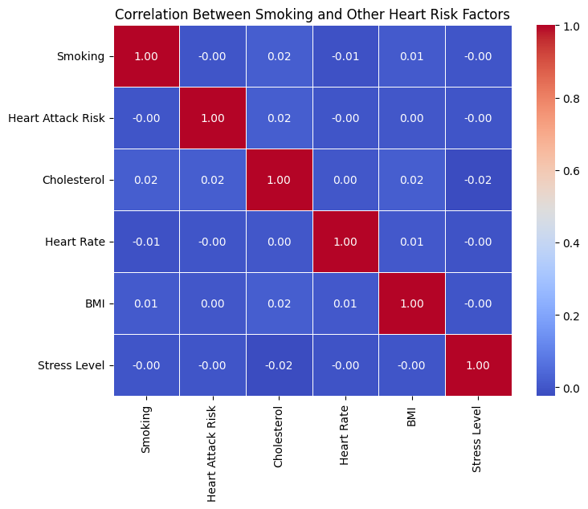
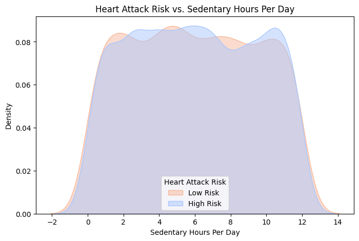

Heart disease is one of the leading causes of death worldwide, making early detection, prevention, and treatment crucial. According to the CDC, approximately 805,000 people in the United States have a heart attack each year. While medical advancements have improved treatment, identifying key risk factors can help individuals take preventive measures and improve their overall health.
Using the Heart Attack Risk Prediction Dataset , this project aims to answer:
This analysis can help provide personalized health insights by identifying trends that may reduce heart attack risk. However, there are limitations. Since the dataset is synthetic, it may not fully capture real-world patterns, making predictions less reliable for actual populations. Additionally, critical factors such as race/ethnicity and other medical conditions—which can significantly influence heart attack risk—are missing. These gaps highlight the need for careful interpretation when applying findings to real-world health decisions.
Despite these limitations, this project aims to explore meaningful patterns in heart attack risk and contribute to a better understanding of how lifestyle and demographic factors play a role.
The dataset contains 8764 rows, each representing an individual patient record, and 26 features. These features are important variables in determining the likelihood of a heart attack. The features include:
| Feature | Explanation |
|---|---|
| Patient ID | A unique identifier for each patient. |
| Age | The patient's age in years. |
| Sex | The gender of the patient (male/female). |
| Cholesterol | The level of cholesterol in the blood; high levels are a risk factor for heart disease. |
| Blood Pressure | The force of blood against the walls of arteries; high blood pressure is a heart disease risk. |
| Heart Rate | The number of heartbeats per minute. |
| Diabetes | Whether the patient has diabetes (yes/no). |
| Family History | Whether the patient has a family history of heart disease (yes/no). |
| Smoking | Whether the patient smokes (yes/no). |
| Obesity | Whether the patient is considered obese based on BMI (yes/no). |
| Alcohol Consumption | The amount of alcohol consumed regularly. |
| Exercise Hours per Week | The number of hours the patient exercises each week. |
| Diet | The patient's eating habits (healthy/unhealthy). |
| Previous Heart Problems | Whether the patient has had previous heart issues (yes/no). |
| Medication Use | Whether the patient takes medication for heart-related issues (yes/no). |
| Stress Level | Self-reported stress level of the patient (low/medium/high). |
| Sedentary Hours per Day | The number of hours the patient spends sitting or doing sedentary activities each day. |
| Income | The income level of the patient (low/medium/high). |
| BMI | The Body Mass Index, a measure of body fat based on height and weight. |
| Triglycerides | A type of fat found in the blood; high triglyceride levels are a risk factor for heart disease. |
| Physical Activity Days per Week | The number of days per week the patient engages in physical activity. |
| Sleep Hours per Day | The number of hours the patient sleeps each night. |
| Country | The country the patient is from. |
| Continent | The continent the patient resides in. |
| Hemisphere | The hemisphere the patient resides in (Northern/Southern). |
| Heart Attack Risk | The likelihood of the patient experiencing a heart attack, based on the dataset's analysis. |
Several key steps were followed to prepare the dataset for analysis. First, I checked for any missing or duplicate data, and found that there were none. Next, the numerical columns I decided to use for data visualizations were shown using boxplots to check for outliers, but none were detected.
This plot shows the number of people at high risk and no risk of heart attack, divided by their smoking status. The visualization clearly reveals that smokers are more likely to be at high risk for a heart attack compared to non-smokers.
   This project can have a significant impact on public health by providing insights into the factors contributing to heart attack risk. The knowledge generated could help guide future preventive measures and personalized health interventions.